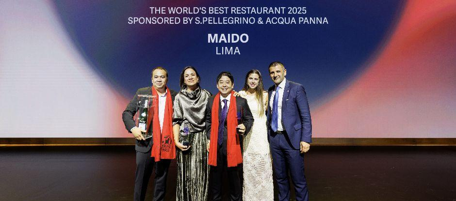
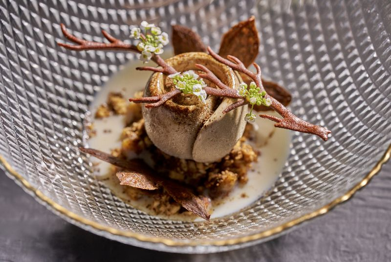
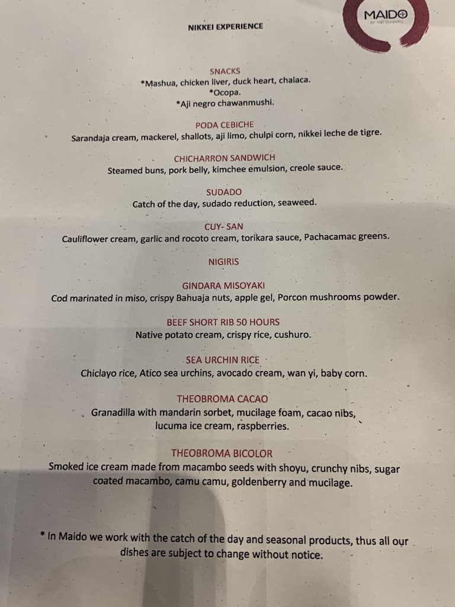

Maido
The World's Best Restaurant

The Maido experience
Spanning more than 10 dishes, the Maido Experience tasting menu is sensory-rich in every detail. Rare ingredients are sourced from the Andes, Amazon and the northern coast of Peru, producing dishes such as squid ramen with Amazonian chorizo, sea snails with yellow chilli foam and Tsumura’s signature short rib braised for just over two days: “so tender, all you need is a spoon.”
The World’s 50 Best Restaurants 2025
Recent years have seen Lima reach a critical mass of world-class fine dining, joined by 50 Best peers Mayta (No.39), Mérito (No.26), Kjolle (No.9) and Central, which took the gong for The World’s Best Restaurant in 2023.
“The great thing about Lima is all the influences it has from other countries. It’s a melting pot of cultures. People from other countries say we like to ‘Peruvianise’ everything. You can’t say that Peru has a distinct flavour, it’s a rollercoaster: Asian, European, Peruvian, but always tasty.”
This year’s top 10 sees equal strength in representation from Europe and Latin America, along with two entries from Asia. Within the top five, Maido is followed by Basque grill house Asador Etxebarri at No.2, with new wave Mexican restaurant Quintonil at No.3, while Dabiz Munoz’s Diverxo claims fourth place, with Rasmus Munk’s Alchemist in Copenhagen rounding out at fifth.
Giving a taste of the experience, Tsumura says, “Maido is about having fun. It’s a creative restaurant, but it’s everything outside of a formal restaurant... The idea we have is to democratise deliciousness. That’s what we want to do.”

On 19 June in the heart of Turin, Maido was crowned The World’s Best Restaurant 2025, sponsored by S.Pellegrino & Acqua Panna. For chef Mitsuharu ‘Micha’ Tsumura, this marks the peak of a brilliant crescendo, bringing Nikkei cuisine from relative obscurity to the global stage.
Food | Quality | Price
Our Best Dish

Maido specialises in Nikkei cuisine: the masterful fusion of Peruvian and Japanese flavours
Reflecting on the win, Tsumura says, “I can’t describe it in words really. It’s a mix of feelings… All the hard work, all the difficult moments, making people understand what we were doing, and now seeing what we’ve done with Nikkei cuisine and Peruvian cuisine… with hospitality. Making people happy has always been what I’ve loved doing.
“I think the most beautiful act of love is to cook for somebody. It’s the most beautiful thing that has happened in my life. It’s been 11 years [being ranked on The World’s 50 Best Restaurants] and it’s a dream come true.”
The story of Maido
The son of Japanese immigrants, Tsumura started his culinary life with formal training in the US before moving to Osaka, where he immersed himself in the techniques he now deploys at Maido. He returned to Lima where he briefly worked at the Sheraton, before opening Maido, aged 28.
His cooking transcends what many call Peruvian-Japanese fusion: Maido’s menu is a love letter to Peru’s multidimensional terroir, brought into relief through deft Japanese technique. Since opening in 2009, the restaurant has evolved from a cult curiosity – which early on drew little attention – to a global gastronomic hit, serving as a standard-bearer for Nikkei cuisine the world over.
Maido’s status today is a far cry from those first few years, when Tsumura toyed with the idea of closing – something he reflected on after winning the Estrella Damm Chefs’ Choice Award in 2024. “One day, my father came over and just told me to persevere, and to continue believing in what you do. We still have a lot of Peruvians that come, and they would tell me, ‘don’t close, we love what you do’, and that kept us going. It was beautiful because Nikkei cuisine wasn’t well known in the streets, and now it’s known all over the world.”
Menu
The Best Dishes
